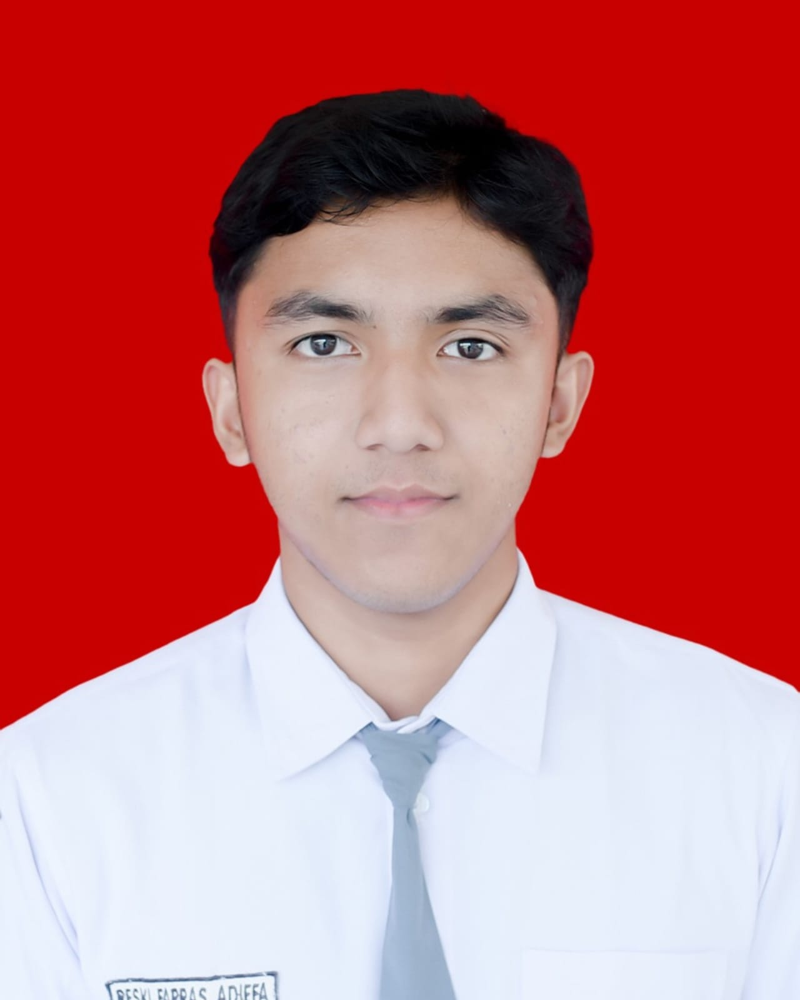

Mahasiswa dengan minat mendalam pada infrastruktur jaringan modern, Software-Defined Networking (SDN), dan Cloud-Native.

Saya adalah mahasiswa S1 Teknik Telekomunikasi di Telkom University. Saya fokus pada pengembangan infrastruktur jaringan masa depan dan optimasi arsitektur sistem.